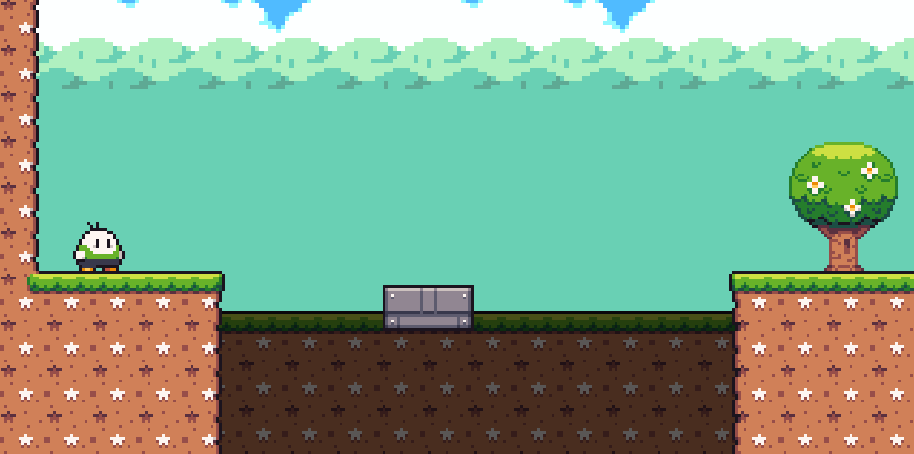

Jumpy
- Portfólio:
- Gerenciador de tarefas e objetivos.
- GitHub
- Protótipo de um game plataformer.
- O intuito do projeto era fazer um esqueleto de um plataformer usando a engine Godot.
- Nele tive o primeiro contato com a logica de programação orientada a objetos.
- Embora básico, o protótipo serviu de primeiro contato com esses fundamentos.
- GitHub
- Chains - Python - 2022
- Jumpy - Godot - 2023